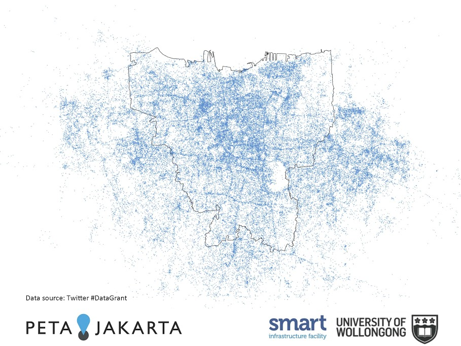

About
In responding to a disaster, many different resources are crucial.
Up-to-date information is critical for relief and response efforts to be targeted and effective. Combining information about the extent and locations of disasters, such as floods, is key to reducing harmful impacts and maximising resilience.
This is the mission of PetaJakarta.org, an open source flood map for the city of Jakarta, Indonesia, which experiences severe flooding on an annual basis.
'CogniCity: Software as Infrastructure for Climate Adaptation' takes viewers behind the PetaJakarta.org interface.
Finding out where flooding has happened in the city has been extremely time-consuming in the past. Information had to be collected manually from responders on the ground, and sent to the Jakarta Emergency Management Agency (BPBD DKI) for processing. PetaJakarta.org enables BPBD DKI to see locations of flooding across the entire city at a glance, meaning less time for data collection and more for response.
PetaJakarta.org combines different data – from social media reports to river gauge measurements – to provide the best possible source of information for decision-making during flooding. The map combines citizen reporting, social media, government flood alerts and sensor data to provide flood information for residents and the government.
During disasters, it is often the local residents who have the most valuable information. PetaJakarta.org has proven the utility of this information to improve disaster response at the city-scale, by transforming social media networks into platforms for critical information collection, sharing and coordination.
PetaJakarta.org uses this combination of data to map the location of flooding in real time, helping the public and emergency services to improve responses to flooding and answer questions such as: ‘There’s flooding nearby, should I collect my kids from school early?’ and ‘Which neighbourhoods are currently worst affected by flood waters?’
Flooding in Jakarta’s Central Business District in 2013. Photo shared by Twitter user @LukeMunns
The map – and the software and data behind it – are shared openly, so can be integrated into systems from government agencies and NGOs tasked with responding to the flooding. This offers a practical solution for developing platforms of civic co-management in cities facing extreme weather events.
The system is powered by CogniCity, a free and open source software created by the PetaJakarta.org team to build the real-time map. The creators hope that other cities will look to Jakarta as a model to emulate for improving response and increasing resilience to extreme weather events.
The PetaJakarta.org team
PetaJakarta.org is a research project led by the Open Source Geospatial Laboratory (OSGeoLab) at SMART Infrastructure Facility, University of Wollongong. The project is coordinated in collaboration with the Jakarta Emergency Management Agency (BPBD DKI) and Twitter Inc.
PetaJakarta.org student flood team with members of BPBD DKI Jakarta at SMART Infrastructure Facility, University of Wollongong, 2014; courtesy of University of Wollongong.
Project team
- Dr Tomas Holderness, Co-Chief Investigator + Leader of Open Source Geospatial Laboratory
- Dr Etienne Turpin, Co-Chief Investigator of PetaJakarta.org
- Dr Matthew Berryman, IT Architect
- Fitria Sudirman, Media Coordinator
- Alifa Rachmadia Putri, Field Office Coordinator
- Mahardika Fadmastuti, Geographic Research Coordinator
- Pritta Andrani, Research Coordinator
- Robert Ogie, Data Analyst
- Frank Sedlar, Visiting Research Fellow + Fulbright Fellow
- Kali Stull, Visiting Research Fellow
Background
Jakarta’s data infrastructure – key to urban planning, services and insight – has historically not been very robust. Because of a lack of data, during flooding there has been very little information available to those coordinating response and rescue initiatives, and flooding locations had to be recorded and mapped manually.
However, despite this lack of data, Jakarta has one of the highest numbers of Twitter users on the planet.
PetaJakarta.org is led by a lab whose focus is on developing new and innovative methods using open source geospatial data to understand the resilience of infrastructure to extreme weather events and climate change.
As researchers, the PetaJakarta.org team were intrigued as to whether they could transform social networks into real-time platforms for mapping data collection and information sharing during emergencies.
There was very little formal data available on the locations of flooding, but we could see massive spikes in Twitter activity during heavy rainfall events. We knew it took the government a long time to collect, consolidate and map the floods to organise response, so the potential of [using] the tweets as a source of real-time information was immediately apparent.
– Tomas Holderness, Co-Chief Investigator, PetaJakarta.org
However, the team faced two challenges in exploring this potential. First, they had to verify that the tweets corresponded to the locations of flooding. Second, they had to work out how to ensure the data and resulting map was used by both residents and the government.
Sourcing real-time flood data from Twitter
To solve the problem, the team came up with a simple idea: to search for tweets that contained the word “flood” (“banjir”) and reply to users directly via Twitter, asking them to confirm whether their location was currently flooding. When users replied confirming flood conditions, their report would be automatically added to the live flood map.
Through this process, PetaJakarta.org is able to filter out the ‘background noise’ from other Twitter conversations, and focus only on those users who are being affected by flood waters.
PetaJakarta.org flood report. Courtesy of PetaJakarta.org.
Building a multistable map
The resulting map of flood reports is designed to be used by both residents and the Jakarta government, acting as a single source of information for flood conditions. This means that no matter what device is used, the map scales appropriately, either showing the reports at street-level on a mobile device or providing a city-wide situational overview for the Jakarta Emergency Management Agency control room.
The decision by the PetaJakarta.org team to build a single “multistable” map that works for everyone – instead of separate apps for resident users and the government – helps to maximise trust and transparency in information sharing between government and citizens.
Simply making the data open was not enough. We had to build a level of trust with residents to encourage them to submit flood reports. Allowing residents to see exactly the same information as the government helped to achieve this.
– Etienne Turpin, Co-Chief Investigator, PetaJakarta.org
Because the PetaJakarta.org map and its data is freely and openly available, the 43% of the city’s residents who have smartphones – more than 125 million people – can use it to see the situation on their smartphones in real time.
Data is also shared through an open API so that Jakarta’s Emergency Management Agency, which is responsible for relief efforts, can also access and use the data within their existing disaster management software.
Sharing the data via an open API helps to reduce duplication of efforts and silos between data. Because it can be shared and used with multiple existing systems, the data from PetaJakarta.org is at the very heart of flood response in Jakarta. In addition to Jakarta’s Emergency Management Agency, the API is used by other agencies and NGOs who all have a role in responding to flooding, such as the Australian Government’s DMInnovation Project and the Pacific Disaster Center.
Integrated data
Since the initial pilot test between 2014 and 2015, the PetaJakarta.org team have added additional data sources and enriched media to the map. These included tweets with photos, reports from the citizen journalist Pasangmata.com, and the government’s civic reporting app Qlue. By integrating different sources of information, the software CogniCity gives residents different ways to add their reports to the map.
The PetaJakarta.org team has also added hourly information on river heights in locations throughout the city from government sensors.
The PetaJakarta.org website landing page.
A picture speaks a thousand words. We’re building a tool that lets people see data from the widest array of sources, so that they can make the most informed decisions about the flooding possible. At the end of the day, information is power and by building an open and web-based platform [we have made sure] our users are not restricted by device or operating system, as with traditional apps.
– Tomas Holderness, Co-Chief Investigator, PetaJakarta.org
Open software as infrastructure for climate adaptation
Through the development of the open source Cognicity software, PetaJakarta.org shows how social media can act as a platform for information collection, sharing and coordination in the face of disasters.
Visiting Research Fellow Frank Sedlar demonstrates how to submit flood reports to residents of North Jakarta. Photograph courtesy of Marcin Szczepanski / University of Michigan.
PetaJakarta.org was cited in the 2015 World Disasters Report as an example of how to connect with local residents, who often have the most accurate and up-to-date information during disaster situations.
During the information vacuum that follows a natural disaster, residents self-organise using social media and their mobile devices. The project aims to help address the challenges of harnessing this information to help improve response, and build more resilient cities.
The residents of Jakarta were already sharing flood information and coordinating their response via their internet-connected phones. The challenge for us was not to disrupt these processes but to cooperatively engage with them, helping to provide greater visibility of flood conditions and government response in real time. This is a real evolution in the humanitarian space – we’re extending and building on previous crowdsourcing approaches that inspired us, such as Ushahidi and OpenStreetMap, during the Haiti Earthquake.
– Etienne Turpin, Co-Chief Investigator, PetaJakarta.org
As urban areas continue to grow and respond to extreme weather events intensified by climate change, the PetaJakarta.org team hope that the CogniCity platform, open and freely available, will be adopted by cities to help respond to a variety of challenges world wide.
CogniCity allows us to integrate data from multiple platforms simultaneously. We’re already extending the software in some really exciting ways, such as using the Internet of Things to connect to digital sensors and smartwatches – potentially ground-breaking developments for decision making during humanitarian crises.
– Matthew Berryman, IT Architect, PetaJakarta.org
About the data
By making the flood map and its data open, PetaJakarta.org ensures that flood information is accessible and useable by individuals, communities and government agencies.
PetaJakarta.org runs on the open source software CogniCity, built by the SMART team to power PetaJakarta.org. CogniCity listens for flood tweets in Jakarta using Twitter’s PowerTrack system, and is responsible for asking users to verify the current flood situation.
When a tweet about flooding is received, it is transformed into a standardised ‘confirmed report’ format, detailing the location of the report, and the accompanying message links to the original tweet. Flood messages from the Pasangmata.com and Qlue apps, along with river gauge readings, are also consolidated by the software. All reports are stored in a spatial database, which powers the real-time map.
For individual residents, the map focuses on the information that is most important: the reports of flooding around the user’s current location. When a user in the city opens the map on their mobile device, they are automatically zoomed to their current location. On a desktop computer - such as those in the emergency management control room – the map instead shows flood activity across the entire city. In this way the map serves two purposes, but still acts as a single source for flood conditions in Jakarta.
For the Emergency Management Agency (BPBD), the PetaJakarta.org team extended the interface to show a city-wide situation overview to help coordinate rescue and response. From Jakarta’s central control room, BPBD operators can quickly identify and verify multiple PetaJakarta.org flood reports and in turn designate the estimated depth of flood waters currently afflicting a particular neighbourhood. Reports are verified by cross-checking against other reports on the map in the same area, and through comparison of ancillary government data gathered by the control room, such as calls from first-responders and assessment teams on the ground.
BPBD DKI Jakarta Control Room. Photograph courtesy of Marcin Szczepanski / University of Michigan.
Once the operator has determined the flood depth for a given neighbourhood, the data is shared publically via CogniCity’s API and automatically added to the public PetaJakarta.org map as it is identified in the control room. In this way, in addition to accessing individual reports for specific areas, residents can also find the verified depths of flood waters directly from the control room in real time.
PetaJakarta.org live flood map. Photograph courtesy of Marcin Szczepanski / University of Michigan.
The flood reports from residents are open data, so everyone gets to see the same information. And because BPBD can now use CogniCity to consolidate multiple types of reports in one place, they can actually build on these individual reports to create a street-by-street representation of flood heights in near-real time and share this directly with Jakarta’s residents. To our knowledge, this is a world first.
– Tomas Holderness, Co-Chief Investigator, PetaJakarta.org
The open data approach taken by Tomas Holderness and his team has been a critical component of the project. During a disaster there is a lot of speculation and conflicting information, especially on social media. By making all the data open and available using the open source software CogniCity, PetaJakarta.org is helping to establish trust and transparency between residents and the government, a process they call ‘civic co-mangement’.
With support from the Australian National Data Service, at the end of each monsoon season the PetaJakarta.org team archives the information collected, and makes it freely available for download. Records of the data are created in the Research Data Australia archive for inclusion in the National Library of Australia. PetaJakarta.org is one of the first examples of an international research project sharing its data in this manner, ensuring that information collected is available to other scientists, engineers and researchers. The ultimate goal of the archive is to provide better insight into flood events in Jakarta and help identify ways to alleviate flooding and its impacts.
Methodology
Building on local resilience
Critical to the project was an understanding of existing processes of resilience already in place during floods in Jakarta. Many residents had already developed informal warning systems, using SMS chains and social media to warn friends and family downstream of surging river levels.
PetaJakarta.org was designed to build on these existing processes of resilience, information sharing and coordination, using already familiar concepts and minimising the cultural shift required for users to participate.
It was also important to understand government response and information flows during disaster scenarios. The PetaJakarta.org team spent over a month embedded with the Jakarta Emergency Management Agency (BPBD DKI), using a process of rapid ethnography to record and document how the agency responded to critical flood events. This helped to ensure the system could be designed to be of maximum use to the agency, as well as individual residents.
Initial System Test – February 2014
While in Jakarta in February 2014, Dr Turpin and Dr Holderness created what would later become the foundations of the CogniCity platform. Connected to the public Twitter API during an intense rainfall and flood event, they measured over 150,000 tweets around the city that contained the word “flood” or “banjir”. The high volume of data triggered the realisation that it may be possible to map flooding using Twitter data at a neighbourhood scale.
In addressing the question of how to filter reports, they considered automatically asking users – who had tweeted about flooding – to confirm the situation at their locations. Before the end of the monsoon season, in March 2014, they had created a prototype capable of having a simple conversation with a user to collect confirmed situational reports. While conversational artificial intelligence software had long existing on social media, this was the first example of such a process being used as a method of filtering reports for humanitarian situational awareness.
Twitter #DataGrant – February 2014
 Twitter #DataGrant map showing all “flood” and “banjir” tweets from 2012-13. Courtesy of PetaJakarta.org and Twitter Inc.
Coincidently, on the same day CogniCity's initial system test, while Jakarta was flooding, Twitter released its #DataGrant programme, offering researchers worldwide the opportunity to access an archive of Twitter data for analysis. The University of Wollongong was selected as one of six recipients of the award, and so therefore the PetaJakarta.org project was created. Using the archive of Twitter activity from two previous monsoon seasons – more than 8 million tweets – the team were able to optimise and test the initial version of CogniCity using real-world data before making the system live. In June 2014 the team were invited to share their research at the industry’s social data Big Boulder, and initiate a formal collaboration for the project with Twitter.
Pilot Study – November 2014 – April 2015
In December 2014, PetaJakarta.org was officially launged by Jakarta Governor Basuki Tjahaja Purnama, who tweeted the president of Indonesia, Joko Widodo, asking him to tweet flood reports to @petajkt using the hashtag “#banjir” or “#flood”. This first pilot version of PetaJakarta.org ran through the monsoon season until April 2015. During this time there were five key flood events in Jakarta, resulting in 1,000 confirmed flood reports and over 2.2 million Twitter impressions from the @petajkt account. The first version of the platform was an immediate and resounding success; for the first time residents of Jakarta could identify locations of flooding in real-time, helping them navigate the city during monsoon rainfalls. Concurently, the Jakarta Emergency Management Agency (BPBD DKI Jakarta) used PetaJakarta.org to identify hotspots of flooding inundation, helping to speed up the response of emergency services.
Jakarta’s Governor, Basuki Tjahaja Purnama, launches the PetaJakarta.org platform in December 2013. Courtesy of Tatyana Kusumo.
Version 2.0 December 2015 - January 2016
In December 2015, the PetaJakarta.org project - led by the OSGeo Lab at the SMART Infrastructure Facility and in collaboration with Twitter Inc. and BPBD DKI Jakarta – launched version 2.0 of the CogniCity software, to power PetaJakarta.org for a second monsoon season.
Version 2.0 provided some significant updates to the software, pushing CogniCity to the cutting-edge of disaster response systems. By adding user-generated photos of the flooding directly to the map, and organising these by neighbourhood district into a 'risk matrix', emergency managers could use PetaJakarta.org to determine flood heights in near-real time and share this information back to the map. As a result of this integrated feedback-loop between residents and the government, during flooding the map represents a real-time estimate of water depths across the city. The PetaJakarta.org team also worked to add new data souces of flood reports from the citizen journalism app Pasangmata and citizen survey tool Qlue. These new data sources, in conjunction with reports from Twitter, improved the coverage of flood information. Combined with real-time flood heights from BPBD, they also helped PetaJakarta.org better inform residents and first responders, aiding decision making during dynamic flood situations.
Bar chart of Twitter activity during main flood events from the PetaJakarta.org White Paper 2015. Courtesy of PetaJakarta.org.
Due to the unique climate conditions created by the 2015 El Niño ocean current, in 2016 there has been little respite in Jakarta’s monsoon season, which has continued unabated through the summer. During this time, PetaJakarta.org has provided a lifeline service to the city, with significant flooding events occuring once a month. Through the open API, the data recorded by PetaJakarta.org have also been shared with multiple agencies to help support hazard assessments and future flood response and prevention planning. To date in 2016 over 5,000 reports have been submitted to the map and BPBD have helped respond to more than 1,000 individual flood-affected areas of the city.
All flood reports received by PetaJakarta.org in 2016, as of 1 August. Courtesy of Tomas Holderness / PetaJakarta.org.
Collaboration
The ODI has helped Petajakarta.org spread the word about the power of open data and open source software for addressing urgent urban challenges.
In particular the ODI has helped vocalise our approach of software as infrastructure for climate change adaptation. The video we created, which could not have happened with the ODI’s support, shows that if we are to build resilient cities we need to harness new data sources and empower residents to share and communicate information during critical events.
– Tomas Holderness, Co-Chief Investigator, PetaJakarta.org
CogniCity has successfully demonstrated, through two monsoon seasons, that these processes cannot happen in isolation, but can only be effective through a strategy of open collaboration between individuals, communities and government.
What next?
In July 2016, as the video was being prepared, the PetaJakarta.org team was working to hand over the project to the Jakarta Emergency Management Services, but Dr Holderness and Dr Turpin are not finished. They accepted positions as Research Scientists with the Urban Risk Lab at MIT, and won an award to develop a new, more comprehensive open source platform for multiple hazards and various other data sources, including instant messaging.
The new platform, PetaBencana.id, will be rolled out later this year in anticipation of the rainy season, to service over 50 million residents in Java.
Meanwhile, in a recent report the Federal Communications Commission has also recommended PetaJakarta.org as the model to follow for crowdsourcing disaster response information in the United States.
With this momentum, Dr Holderness and Dr Turpin formed the Humanitarian Infrastructures Group as part of the Urban Risk Lab at MIT, to further the use of open data and open source software for climate adaptation, disaster response and humanitarian action.